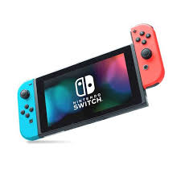

La nueva consola de Nintendo redefine la experiencia de juego con tecnología de última generación, diseño innovador y una biblioteca de juegos que te dejará sin aliento.
Presentación del Producto

Con un diseño elegante y características revolucionarias, esta consola está lista para llevar tu experiencia de juego al siguiente nivel.
Características Principales
Gráficos de Última Generación: Disfruta de gráficos impresionantes que te sumergen en cada juego.
Compatibilidad con Juegos Anteriores: Juega tus títulos favoritos de generaciones anteriores sin problemas.
Control Inalámbrico Avanzado: Experimenta una nueva forma de jugar con controles ergonómicos y tecnología inalámbrica mejorada.
Multijugador en Línea: Conéctate con amigos y jugadores de todo el mundo para disfrutar de partidas emocionantes.
Beneficios
La nueva consola de Nintendo no solo ofrece una experiencia de juego superior, sino que también proporciona beneficios adicionales como:
Acceso a una Biblioteca de Juegos Exclusivos: Disfruta de títulos exclusivos que solo están disponibles en esta consola.
Actualizaciones Constantes: Recibe actualizaciones regulares que mejoran el rendimiento y agregan nuevas funciones.
Interfaz Intuitiva: Navega fácilmente por el sistema con una interfaz diseñada para ser amigable y accesible.
¿Por Qué Es Mejor Que Otras Consolas?
Comparada con otras consolas en el mercado, la nueva consola de Nintendo destaca por:
Innovación Tecnológica: Incorpora tecnologías avanzadas que no se encuentran en otras consolas.
Experiencia de Usuario Superior: Ofrece una experiencia de usuario más fluida y atractiva.
Mayor Variedad de Juegos: Cuenta con una biblioteca de juegos más diversa y exclusiva.